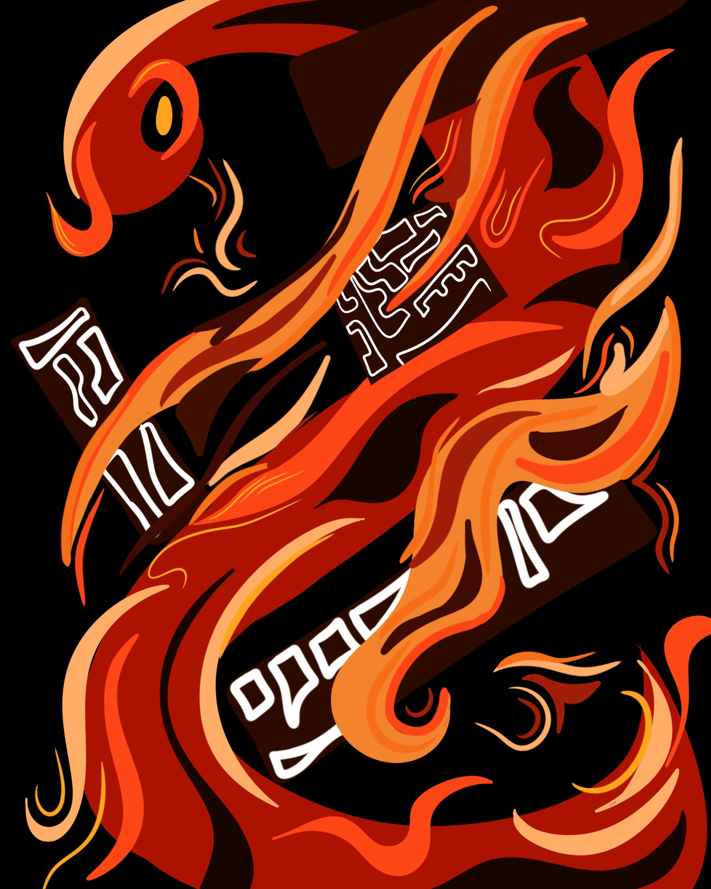
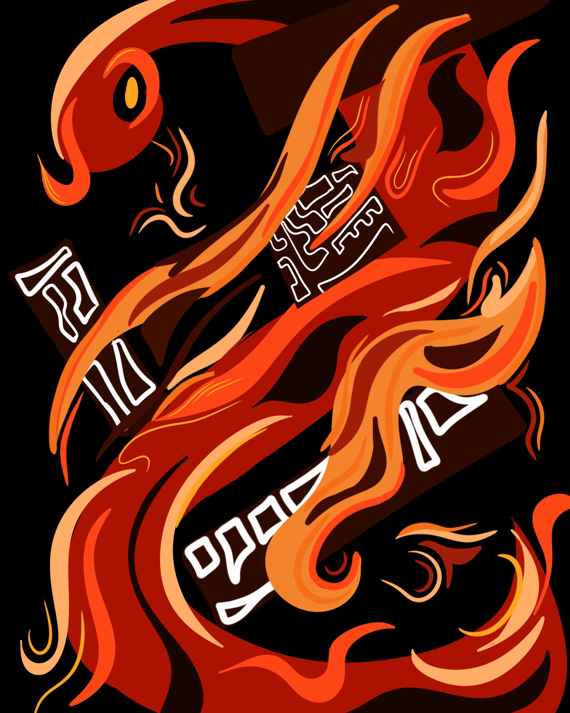

Artist's Statement
My name is Marcus Rallis. I am currently pursuing my undergraduate degree of Global Business and Digital Arts at the University of Waterloo. I consider myself an artist, a creative, and designer. I have a way of seeing the world that is unique to anyone else. But I haven't always seen myself this way.
Like every other kid, faced the daunting task of choosing a lifelong career path. The conventional options were always there: doctor, financier, architect. However, when asked the question "what do you see yourself doing all day?" the answer was always projects. I have truly fallen in love with the feeling of being consumed by a project and all the emotions that come with it. I enjoy the feeling I get when creative energy flows through my body. Creativity energy is like water. Everyone has it, though for some, it may lie deeper beneath the surface. In my case, this energy has always been a constant presence, like a small, persistent puddle. It blossomed into a flowing stream each time I engaged in artistic activities, When I don't exercise these skills however, that energy begins to dry up.
I have built this site based on my creative chapters to date. It is just a small glimpse into my ongoing jounrey as an artist. I am driven by an insatiable desire to delve deeper into this artistic consciousness, to explore new mediums, and to transform my stream of creativity into a river, then a lake, and ultimately, an ocean. Like the vast, often understated influence of the ocean, I aspire to leave a subtle yet profound impact on the world through my creative endeavors.
Visual Arts
Visual arts holds a special place in my heart. It's where my identity as an artist was born. Growing up, my mom would often suggest arts and crafts as an activity when I wasn't playing sports. She is a talented visual artist and nurtured my creative side. I wasn't very confident in my ability with a pencil or paintbrush, maybe because I was constantly comparing myself to her or other kids in my class, but she persistently told me how good I was. In the summer of 2017 it was time to select my electives for grade 9. This was a pivotal educational decision, as I had the freedom to choose electives. All of my friends chose drama because it was the bird course. My parents reminded me that the decisions I made in highschool were important because university was right around the corner. I ultimately chose visual arts. Luckly, with a great teacher and beautiful studio, it has been one of the best classes I've taken to this day.
Here is some of the work I produced in my visual arts classes in high school.
Digital Arts
As I sat in Ms. Aylesworth's visual arts class, I noticed another teacher bringing groups of kids into a room at the front of the class. I asked Ms. Aylesworth and she informed me it was Mr. Krawczyk's digital art's class using the dark room. I knew I had to try it. I always had an aptitude with tech so I imagined this could be my thing. The problem was, my schedule was tight and I couldn't fit all of my academics with visual and digital arts. I ultimately decided to switch back and forth. Grade 9 I would take visual, grade 10 I would take digital etc.
Here are some digital art peices I have created thus far.
Audio & Visual
Semester 2A of my GBDA undergrad has been the best semester of my life. I know that may seem outragoues to say, but, I genuinely have never been so inspired. The content is well thought out and the teaching is outstanding. For once, I am able to get lost in each and every project. Our digital projects class has introduced us to the art of filmaking. While pondering my career options, making and editing videos has crossed my mind numerous times and I have always dismissed the idea fairly quickly. I don't know wether it's Terry Oneil's contagoues passion or his ability to reveil reality, but it has me hooked.
Click for my YouTube Channel>>>


 
